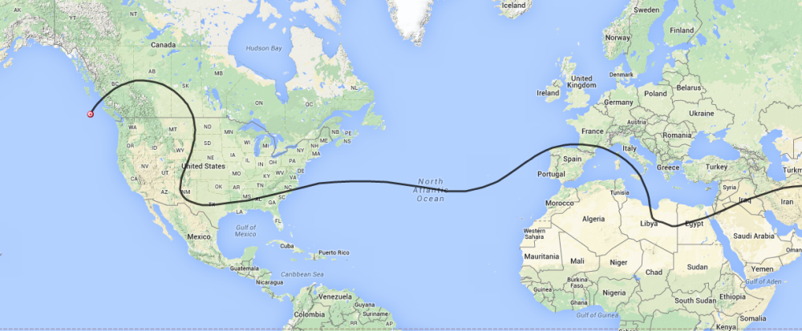

All,
CNSP-24 was launched Sunday 4/12/2015 and has now traveled from San Jose, for 15 days, completely around the planet and is about to arrive over Canada to complete one orbit of Earth. It is currently flying near Victoria Island and heading Northeast into Canada. It will remain in slight radio coverage until it turns South on its way back into the U.S.
Here is the link to follow its progress.
http://aprs.fi/#!call=a%2FK6RPT-11&timerange=604800&tail=604800
My current path prediction is:

As you can see this latest prediction will take it straight South across the Rocky Mountains all the way to Texas before turning East on the beginning of orbit number 2.
Don